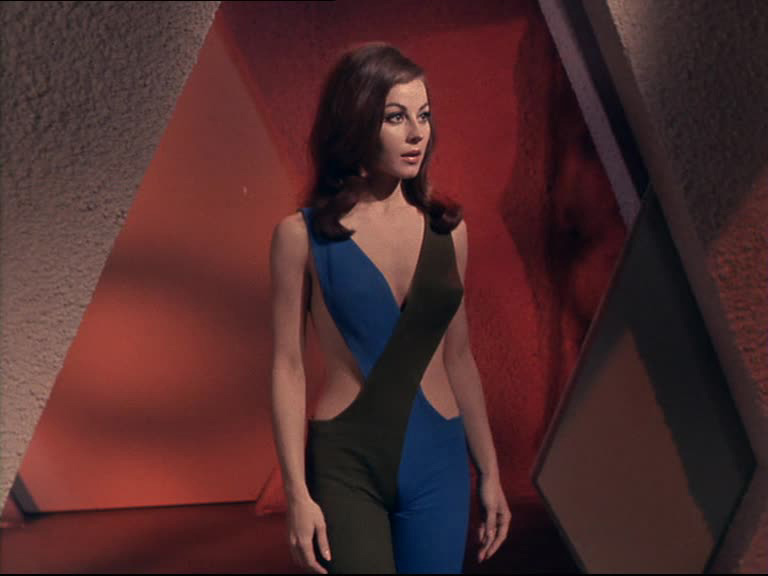

I have been a Star Trek fan all my life. My dad, a Trekkie himself, introduced my brother and I to Star Trek when we were young. I immediately became hooked on the show - its cast of characters, the focus on space exploration and travel, and the quirky flip-phone-esque communicators. Later in life, I revisited the series and found a new appeal in the politics, ethical dilemmas, and moral philosophy the show explored. And yet, I have never been able to enjoy the series to the fullest extent. As much as I love Star Trek, watching the series always comes with a feeling of disappointment in the way female characters are portrayed.
It should be noted that Star Trek was before its time in many respects. Its cast was multiracial, which is unimpressive by today's standards but a progressive move at the time. It was also the first show to air an interracial kiss on American television - between Nichelle Nichols and William Shatner in season 3 episode 10. This may seem unremarkable now, but at the time been direct physical contact between men and women of different races on television was seen as controversial. The series marked a new era of social change and progress that even MLK was a fan of.
But this does not exempt Star Trek from critique. For a show about technological and social advancement and the progressive utopian future of human civilization, Star Trek hardly made an effort to extend the same such theme to its female characters. The Original Series, which was created and produced by Gene Roddenberry, succumbs to the unfortunate but classic issue of the male gaze, the presentation of women in the visual arts from male perspectives as sexual objects. This also reproduces the ‘subject’ vs. ‘other’ dichotomy discussed by Simone de Beauvoir in The Second Sex. That is, in art and literature (as well as life in general) man is the “subject” or protagonist while the woman is the “other” - the objects of sexual desire and the passive, supporting roles that come second to their male counterparts.
In life, and as is imitated by art, we assume the protagonist to be male. Until quite recently, we have failed to notice or question this norm, to ask: why are there no female Starfleet captains? This is true also of Star Trek, which features an undeniably male-centric point of view seen in the way female characters are written: flat characters with little to no character traits other than their sexual appeal. It’s almost as if Gene Roddenberry has never actually interacted with a woman. After all, Star Trek is written, directed, marketed towards, and consumed by predominantly men. This is a fact that I am made aware of whenever I watch an episode of Star Trek by the lingering feeling that I am viewing something not made for my eyes, a voice in my head that whispers “this isn’t meant for you.”
Even the opening line of the original series is blatantly male-centric: “to boldly go where no man has gone before.” At this point, I’m sure some hardcore Trekkie in his late 50s would probably make the critique: “ok, but that’s just how people spoke during the time. And ‘man’ is supposed to mean ‘human’ in general, it’s not sexist.” You’re exactly right. Man is taken to mean human, that’s like the whole point. The human experience is defined by men - male experiences, perspectives, and interests. In Simone de Beauvoir’s words “humanity is male.” When we speak of humans, we speak of men and their point of view, how they view the world - and how they view women.
Let’s start with the outfits. If it wasn’t clear enough that Star Trek was directed by a man, the costume design for female characters gets the point across. This can range from a bit too cheeky to downright degrading. Most noticeable is the uniform for female Starfleet personnel, which is both inappropriate and impractical. How are women in Star Trek supposed to navigate the dangerous terrains of "strange new worlds" with outfits like these?
 Has Gene Roddenberry actually ever seen a woman? Like in real life?The answer is: they aren't. Female Starfleet personnel aren’t meant to perform active or leadership roles, they are supposed to sit pretty and enjoy their job as a secretary or a walking beehive.
"What’s wrong with showing a little skin? I thought feminists are supposed to support a woman's sexual liberation and the right to wear whatever they want? You’re just being prude.” You make a good point, my imaginary critic, but there is a line between sexual liberation and sexual objectification. Uniforms in Star Trek are designed to please male audiences, not to empower the women who wear them. Perspective also plays an important role here - Star Trek was (and though to a lesser extent, still is) a show with a predominantly male fanbase, which Roddenberry and other directors of Star Trek would have been aware of. This makes the argument that Starfleet uniforms were designed as a radical act of female sexual liberation somewhat less compelling. More importantly however, skimpy outfits in Star Trek aren’t the exception, they’re the rule - women wear nothing but flashy attire. Sexual liberation means freedom to express one’s sexuality, but not to be defined entirely by one’s sexuality, which is exactly what TOS does. And let’s be honest, what this argument is really saying is: "women should have the right to dress in whatever way pleases my male eye."
So the costume design misses the mark, but that’s only scratching the surface. More egregious is its depiction and portrayal of women. To start, the Original Series utterly fails the Bechdel Test (created by Alison Bechdel and Liz Wallace), with only 6 out of 76 episodes meeting the requirements. For my 50-year-old Trekkie critic, to pass the Bechdel Test a film or TV show must have two women with names who talk to each other about something other than a man. The test is designed to be an easy standard to meet - it’s not asking for much, just, I don’t know, the bare minimum, a sense of basic human dignity and personhood for women? The exceedingly low bar that the requirement sets is why it’s often surprising to find that so many films and TV series fail when put to the test.
Need proof? Here’s a taste of the roles women play in Star Trek:
Trope #1: Clueless/infantile Women
Here we see the clueless/infantine woman in need of male guidance. This trope usually features a confused or uneducated woman in need of a man to explain things to her - especially things like love, romance, and intimacy. One (of many) examples of this is the character “Shahna” in the Star Trek S2 E16 "The Gamesters of Triskelion" who desperately needs Kirk to help explain to her the concept of love, and he comes through with a classic Kirk demonstration (they make out and then he promptly takes off).
Here are some others:
- Season 2, episode 3: The Changeling) Uhura’s memory is erased by the defective robot “Nomad” and she has to relearn...everything I guess? Star Trek never really explained how that worked.
- Season 1, episode 7: What are Little Girls Made Of?) Kirk teaches a female android how to feel love by kissing her. She is also dressed like a space prostitute and is definitely not a sex doll.
Trope #2: Defenseless Women
You’d think that the women of Starfleet would need to have a bit of grit and tenacity, but Roddenberry would prefer to depict their more dependant, vulnerable side. This is your run-of-the-mill trope featuring a weak or helpless woman in need of a big strong man to defend her. The most famous instance of this trope in TOS is season 1, episode 28, when the landing party becomes stranded on a strange planet and Uhura gets scared, making the comment: “Captain, I’m frightened.” Classic woman.
- Season 1 Episode 15: Shore Leave) The crew beams down to a planet that, unbeknownst to them, materializes into reality whatever each individual is thinking. Yeoman Barrows becomes a princess (because that’s what every woman should want to be) and Doctor McCoy must defend her against an attacker.
Trope #3: Helpless Romantic
Women. Deep down, every woman needs a prince charming to settle down with. It’s in their nature!
- Season 1 Episode 4: The Naked Time) A virus spreads throughout the ship making every crew member reveal their innermost thoughts and desires. Sulu becomes a swordsman, Spock is overcome with an identity crisis, and Kirk fights off the virus through sheer force of will (classic Kirk). Meanwhile, nurse Chapel is overcome with romantic emotions and confesses her love to Spock.
- Season 1 Episode 12: Miri) In which Yeoman Rand laments that the Captain doesn’t look at her legs enough. She is later captured by a band of children and must be saved.
- Kirk is romancing yet another woman when they begin to discuss women working in the Enterprise. She poses the question: “Has the machine [the Enterprise] changed them? Made them just people instead of women?” Though this comes from a female character, it nevertheless presupposes that (1) the working woman might be somewhat less “woman” and (2) women are somehow distinct from “just people.” Watch out girls, working might reduce your feminine appeal! It’s ok though, Kirk reassures her that “Worlds may change, galaxies disintegrate, but a woman always remains a woman.” Right...so what exactly is a woman in this definition? And what makes women different from “just people”?
Trope #4: Emotionally Erratic/Incompetent
- Season 2, episode 3: The Changeling) After probing and erasing Uhura’s memory, Nomad makes the comment: “That unit is defective. It's thinking is chaotic. Absorbing it unsettled me” Spock then explains it is because “That unit is a woman”
- Season 3, episode Elaan of Troyius) Kirk remarks “Spock, the women on your planet are logical. That is the only planet in this galaxy that can make that claim!"
- Season 1 Episode 3: The Corbodite Maneuver) Kirk makes a comment about what he’s going to do to “the genius that assigned me a female yeoman” because...women am I right? Haha... nice one Kirk..
I could continue with more examples, but I think these will suffice. The multiple tropes listed here all point to one repeated theme: the portrayal of women not as subjects in their own right, but others.
Seriously, the next time you watch an episode of the original series, ask yourself: can this female character essentially be replaced by a cardboard cutout of a woman? Does all she really do is stand there and look pretty? Does she serve any purpose to the plot aside from being a love interest or object for men to protect/fight over? The answer may surprise you.
Now, I wouldn’t have a problem with these tropes if they made only an occasional appearance in the series, but the truth is that but for a few scant exceptions female characters in Star Trek play no other roles than the above. Uhura is really the only exception here, nd even so when you really think about it her job in Starfleet is basically just a space secretary. There are no women in leadership positions - in fact, in the final episode of the Original Series, it is discovered that women cannot be captains according to Starfleet regulation. There’s not much more to be said.
In sum, women are not subjects with their own lives, thoughts, and desires; they exist for and are defined by men. In Star Trek, man is the subject and woman is the "other." She is the relative, secondary being existing only in relation to men. She is “the inessential in front of the essential. He is the Subject; he is the Absolute. She is the Other” (The Second Sex, 7). In Star Trek, and by extension Roddenberry’s own vision and viewpoint, women are not humans, but rather sexual objects.
I find myself asking how I can reconcile this insulting portrayal of women in Star Trek? Can I still find enjoyment in something that violates my moral principles, the right of every person to basic human respect and dignity, to be subjects rather than others - something Star Trek expressly denies women. More importantly, can I still enjoy something that insults me personally as a member of the female sex?
This dilemma isn’t exclusive to my beef with Star Trek either. This experience is also shared between women/minorities and many of the authors in the western literary canon, and even more broadly - queer people and religion, African-Americans and national pride, individuals and family members who hold backward/intolerant beliefs, etc.
I will always be disgusted with the way Gene Roddenberry portrays women in the original series, but I won’t, and can’t, stop liking Star Trek. Gene was one chauvinist pig but he sure knew how to write sci-fi. Moral perfection, or as we know it today: complete political correctness, does not exist. Nothing is perfect, and Star Trek is no exception, but it would be wrong to throw out every piece of art or literature that transgresses our every moral principle. After all, just because Star Trek failed women doesn’t mean it isn’t still a landmark series in the genre of science-fiction that also served as a major contributor towards racial integration in American television. At the same time, Star Trek’s sexism should not be denied or ignored. Loving and enjoying something or someone does not necessitate forgiving or accepting its wrongdoings.
In sum, I can enjoy Star Trek as a brilliant work of art and still resent Gene Roddenberry for his utter sexism and misogyny. I love Star Trek, but I will always hate its sexist overtone. I love Star Trek, but I will always press for better representation of women in science fiction. I love Star Trek, but I will never avoid calling out misogyny where I see it, even when it comes to the things closest to me.
Star Trek disappoints me in many ways, and yet I have been, and always shall be a Trekkie.
Live long and prosper.